[Y2] AgentOS 조회 7,835 세션 한도 오래 버티는 법 — 공식 문서 5가지 열기
비주얼 벤치마크 (다른 분야)
호텔·리조트 @minluv_st · 좋아요 856(embed) · 댓글 5,000(시트) 가져온 것: 드론 실사 전경 위 노란색+검정 외곽선 초대형 2줄 제목, 사진이 화면 전체
내 시안 (글자 배치 시안 · 최종 그림 아님)
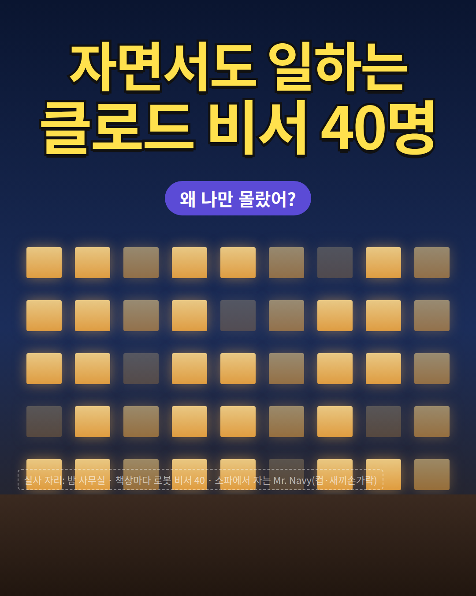
p1_v11
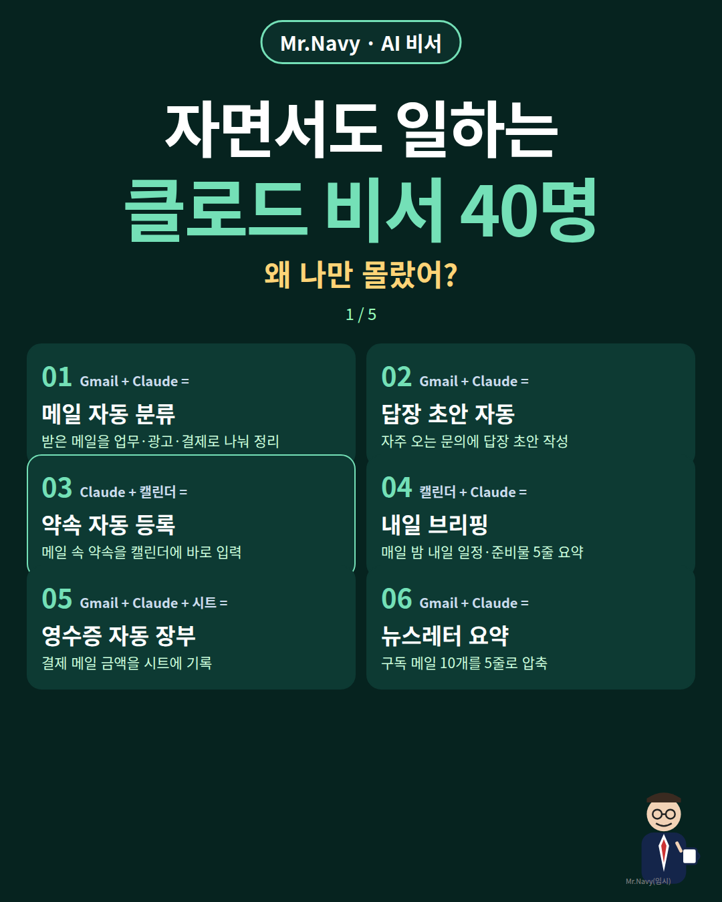
p1
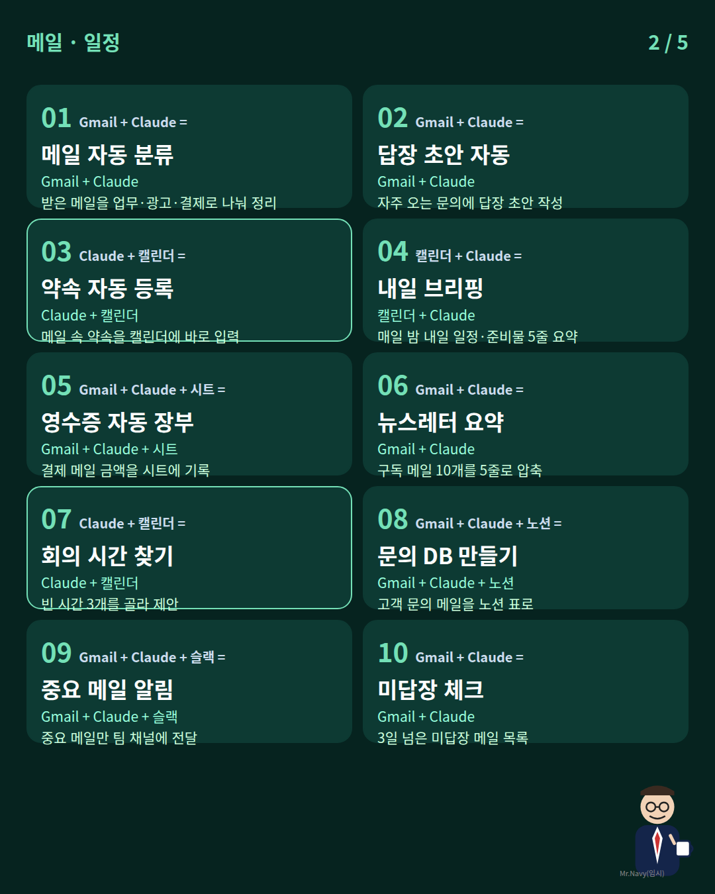
p2
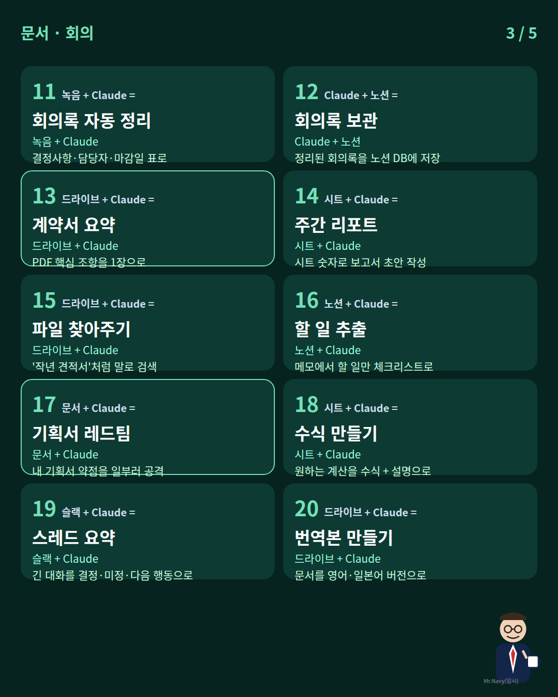
p3
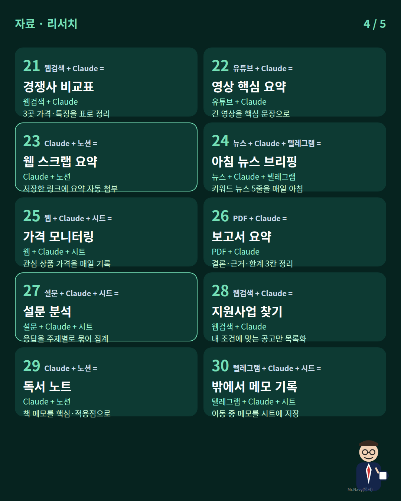
p4
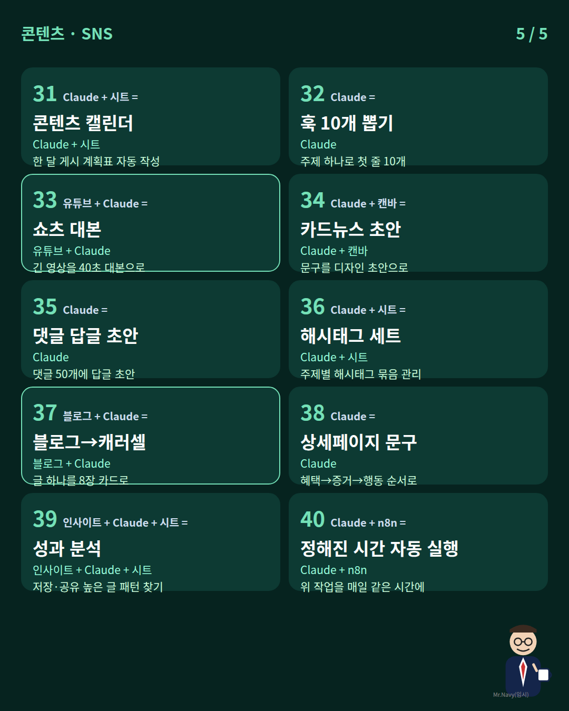
p5
표지 문구 조합 근거
내 문구
어디서 가져와 어떻게 바꿨나
자면서도 일하는
A '24시간 일하는' → 사용자 지시 '자면서도 일하는'으로 변형(24시간=잠자는 시간까지)
클로드 비서 40명
A '클로드 비서 30명' → 숫자 +10 (규칙 A2), 40개 실제 작성 완료
왜 나만 몰랐어?
B 'GPT 명령어 100개 왜 나만 몰랐어?'의 정보격차 꼬리말 그대로 결합
1 / 5 페이지 표시 + 상단 태그
A 표지의 '1/3' 표시·상단 'AI 비서' 태그 레이아웃 유지
장별 내용 + 근거
내용
근거
메일 · 일정 01 Gmail + Claude = 메일 자동 분류 · 받은 메일을 업무·광고·결제로 나눠 정리 02 Gmail + Claude = 답장 초안 자동 · 자주 오는 문의에 답장 초안 작성 03 Claude + 캘린더 = 약속 자동 등록 · 메일 속 약속을 캘린더에 바로 입력 04 캘린더 + Claude = 내일 브리핑 · 매일 밤 내일 일정·준비물 5줄 요약 05 Gmail + Claude + 시트 = 영수증 자동 장부 · 결제 메일 금액을 시트에 기록 06 Gmail + Claude = 뉴스레터 요약 · 구독 메일 10개를 5줄로 압축 07 Claude + 캘린더 = 회의 시간 찾기 · 빈 시간 3개를 골라 제안 08 Gmail + Claude + 노션 = 문의 DB 만들기 · 고객 문의 메일을 노션 표로 09 Gmail + Claude + 슬랙 = 중요 메일 알림 · 중요 메일만 팀 채널에 전달 10 Gmail + Claude = 미답장 체크 · 3일 넘은 미답장 메일 목록
그리드 구조(번호·앱 조합·이름·연결 도구·설명 1줄, 2열×5행)는 A의 칸 구성과 정보량을 그대로 유지(규칙 A3). 01~10 중 '메일 자동 분류·회의록 정리·약속 등록·웹 수집·정기 리포트·영상 요약·밖에서 입력'은 A의 30개 중 겹치는 7개를 표현만 바꿔 계승, 나머지 33개는 새로 작성. 'REDTEAM'(17번)은 B 캡션의 'REDTEAM' 코드에서 착안.
문서 · 회의 11 녹음 + Claude = 회의록 자동 정리 · 결정사항·담당자·마감일 표로 12 Claude + 노션 = 회의록 보관 · 정리된 회의록을 노션 DB에 저장 13 드라이브 + Claude = 계약서 요약 · PDF 핵심 조항을 1장으로 14 시트 + Claude = 주간 리포트 · 시트 숫자로 보고서 초안 작성 15 드라이브 + Claude = 파일 찾아주기 · '작년 견적서'처럼 말로 검색 16 노션 + Claude = 할 일 추출 · 메모에서 할 일만 체크리스트로 17 문서 + Claude = 기획서 레드팀 · 내 기획서 약점을 일부러 공격 18 시트 + Claude = 수식 만들기 · 원하는 계산을 수식 + 설명으로 19 슬랙 + Claude = 스레드 요약 · 긴 대화를 결정·미정·다음 행동으로 20 드라이브 + Claude = 번역본 만들기 · 문서를 영어·일본어 버전으로
↑
자료 · 리서치 21 웹검색 + Claude = 경쟁사 비교표 · 3곳 가격·특징을 표로 정리 22 유튜브 + Claude = 영상 핵심 요약 · 긴 영상을 핵심 문장으로 23 Claude + 노션 = 웹 스크랩 요약 · 저장한 링크에 요약 자동 첨부 24 뉴스 + Claude + 텔레그램 = 아침 뉴스 브리핑 · 키워드 뉴스 5줄을 매일 아침 25 웹 + Claude + 시트 = 가격 모니터링 · 관심 상품 가격을 매일 기록 26 PDF + Claude = 보고서 요약 · 결론·근거·한계 3칸 정리 27 설문 + Claude + 시트 = 설문 분석 · 응답을 주제별로 묶어 집계 28 웹검색 + Claude = 지원사업 찾기 · 내 조건에 맞는 공고만 목록화 29 Claude + 노션 = 독서 노트 · 책 메모를 핵심·적용점으로 30 텔레그램 + Claude + 시트 = 밖에서 메모 기록 · 이동 중 메모를 시트에 저장
↑
콘텐츠 · SNS 31 Claude + 시트 = 콘텐츠 캘린더 · 한 달 게시 계획표 자동 작성 32 Claude = 훅 10개 뽑기 · 주제 하나로 첫 줄 10개 33 유튜브 + Claude = 쇼츠 대본 · 긴 영상을 40초 대본으로 34 Claude + 캔바 = 카드뉴스 초안 · 문구를 디자인 초안으로 35 Claude = 댓글 답글 초안 · 댓글 50개에 답글 초안 36 Claude + 시트 = 해시태그 세트 · 주제별 해시태그 묶음 관리 37 블로그 + Claude = 블로그→캐러셀 · 글 하나를 8장 카드로 38 Claude = 상세페이지 문구 · 혜택→증거→행동 순서로 39 인사이트 + Claude + 시트 = 성과 분석 · 저장·공유 높은 글 패턴 찾기 40 Claude + n8n = 정해진 시간 자동 실행 · 위 작업을 매일 같은 시간에
↑
설명글
클로드, 아직 질문만 하고 계셨나요? 잘 쓰는 사람은 앱을 연결해서 '비서'로 씁니다. 메일·일정·회의록·리서치·콘텐츠까지, 내가 자는 동안에도 돌아가게요.
이번엔 자면서도 일하는 클로드 비서 조합 40개를 정리했어요. → 받은 메일 자동 분류 · 답장 초안 → 회의록을 결정사항·담당자·마감일로 → 아침마다 키워드 뉴스 5줄 브리핑 → 긴 유튜브를 40초 쇼츠 대본으로
그런데 비서를 늘리면 한도가 금방 닳죠. 이유는 하나예요. 클로드는 메시지마다 앞 대화를 처음부터 다시 읽어서, 30번째 메시지는 첫 메시지의 약 30배를 처리합니다. ① 새 작업은 새 대화(/clear) ② 길어지면 요약해서 이어가기(/compact) ③ 가벼운 일은 가벼운 모델(Haiku) 이 3개만 지켜도 같은 요금제로 훨씬 오래 씁니다.
40개 다 만들 필요 없어요. 제일 귀찮은 일 하나부터 맡겨 보세요. 조합별 연결 순서 + 프롬프트 세팅표 필요하면 댓글에 '40' 남겨주세요. DM으로 보내드릴게요.
설명글 부분
근거
아직 질문만 하고 계셨나요? / 잘 쓰는 사람은 …
A 캡션 1행 '클로드를 잘 쓰는 사람은 프롬프트보다 먼저 구조를 만듭니다' → '질문'과 '비서' 대비로 변형
→ 예시 4줄
A 캡션의 '→ 예시' 나열 형식 유지, 항목은 새 40개에서 선택
한도가 금방 닳죠
C '클로드 한도 솔직히 너무 빨리 닳지 않나요?' 공감 문장 결합
30번째 메시지는 약 30배
Y2(AgentOS) 00:00~00:45 '30번째 메시지는 첫 메시지의 30배쯤' (영상 발언, 공식 수치 아님 → '약' 표기)
/clear · /compact · Haiku
Y1(짐코딩) 03:00·09:45·14:00 구간, Y2 01:30~03:45 구간 (Claude Code 기준 명령어)
40개 다 만들 필요 없어요 …
A 캡션 '30개를 전부 만들 필요는 없습니다. 지금 제일 귀찮은 일 하나만' 구조 계승
댓글에 '40' → DM 세팅표
A의 '댓글에 비서 → 세팅표 DM' + B '댓글 달고 받아가세요' CTA 결합
첫 댓글 📌 한도 아끼는 3가지는 Claude 공식 문서 내용을 정리한 유튜브(짐코딩·AgentOS)를 참고했어요. 여러분이 제일 먼저 맡기고 싶은 비서 번호를 댓글로 알려주세요!
표지만 다른 섹터 비주얼(호텔 @minluv_st): 밤 도시 고층 사무실 실사(창문마다 불 켜짐, 책상마다 작은 로봇 비서들이 일함, 주인은 소파에서 잠) 화면 전체 + 노란 글자·검정 외곽선 2줄 제목 '자면서도 일하는 / 클로드 비서 40명' + 작은 알약 '왜 나만 몰랐어?'. 내지 2~5장은 같은 분야 원본의 10칸 그리드 정보량 유지하되 색·카드 모양은 우리 팔레트.
1080x1350 photorealistic night scene, full-bleed: a modern Seoul office tower floor seen through a big window at 3am, every desk lit with a tiny friendly white robot assistant working on a laptop (about 40 robots), a man in a navy suit with round glasses (Mr. Navy) asleep on a sofa in the foreground holding a mug with pinky raised. Cinematic, warm desk lamps vs blue night city. Leave the upper 40% clear for a huge yellow headline with thick black outline (added later). No real logos. Attach: character sheet; visual reference = hotel drone-photo cover (layout only).
내지 디자인 / 이전 표지 지시
원본 A 레이아웃 1:1: 검정 배경, 상단 계정 태그 + '○○ 비서' 라벨, 2줄 대형 제목(1줄 흰색, 2줄 포인트색), 페이지 표시, 2열×5행 둥근 카드(번호 크게 + 앱 아이콘 '+' '=' 수식, 굵은 이름, 연결 도구 한 줄(Claude만 포인트색), 설명 한 줄), 강조 카드 2개는 테두리 포인트색. 변경점: 포인트색 주황→민트(#74E0B7), 배경 검정→딥그린(#06231F), 실제 앱 로고 대신 이름 배지, 우하단 Mr. Navy(컵, 새끼손가락) 작게.
1080x1350 Instagram carousel page. Exact layout of the attached reference (cover + 2-column x 5-row grid of rounded dark cards), but recolor: background deep green #06231F, accent mint #74E0B7, white text. Each card: big number top-left, small app-name pills joined by '+' and '=', bold Korean title, one-line tool combo, one-line description. Replace real app logos with simple neutral pills. Tiny character 'Mr. Navy' (40s Korean man, navy suit, round glasses) peeking at bottom-right holding a coffee cup with pinky raised. Attach: reference image + character sheet. Korean text will be typeset; keep text areas clean.
V2_04 · AI 창업·부업·돈정보 (지원금)
형식: 캐러셀 5장 ← 원본 A 4장 → +1장 (규칙 A2). 표지 = A의 뉴스 속보형, 2장 = B의 원 분기 다이어그램(3총사→4총사)
참고 원본 (왼쪽)
[A] @consultant_ocy1013 · 좋아요 1,194 · 댓글 5,233 캐러셀 4장, '[긴급속보]' 뉴스형 표지(태극기·청와대 배경 실사) 훅: “폐업이력 있으면 최대 1억 지원금 준다”
A '최대 1억' → N1 재도전응원프로젝트 '기업당 최대 2억원 바우처'(2027 예산안)로 금액 상향, 근거 있음
재도전 지원금 4총사 완벽정리
B '절세 계좌 3총사 완벽 정리' → 4총사(+1, 규칙 A2)
장별 내용 + 근거
내용
근거
재도전 지원금 4총사 한눈에 폐업·재창업한 사람이 받을 수 있는 대표 사업 4개 ① 재도전성공패키지 (재창업 기업) ② 재도전응원프로젝트 (우수 재도전 기업) ③ 재도전성공학교 (입주형 교육·지원) ④ 희망리턴패키지 재기사업화 (소상공인)
B 원 분기 다이어그램 구조 / N1 '3대 사업 1,398억' + Y1 희망리턴 = 4개
얼마까지 주나 (최대 금액) ① 재도전성공패키지: 2026 최대 1억·평균 6,700만원 → 2027 예산안 최대 1.5억, 185곳→320곳 ② 재도전응원프로젝트: 130곳, 기업당 최대 2억 바우처 + 컨설팅 ③ 재도전성공학교: 595억 편성, 청년창업사관학교식 입주 지원 ④ 희망리턴 재기사업화: 최대 2,000만원 (2026 기준)
① 2026 수치 = A 캡션(평균 6,700만원·최대 1억), 2027 = N1 / ②③ = N1 / ④ = Y1 14:00~16:30
희망리턴, 실제로 얼마 받나 평가 상위 30% → 2,000만원 30~70% → 1,700만원 그 외 → 1,400만원 (못 받아도 1,400만원) 자부담: 지원금의 절반 (2,000 받으면 1,000 부담) 대상: 폐업 후 공고 마감일까지 사업자 미등록 = 재창업 트랙 2026년엔 1/30~2/27, 선착순 2,400곳 진단 신청 · 의무교육 이수 필수
놓치면 못 받는 체크 5개 1. 공고는 연초에 몰림 (2026: 희망리턴 1~2월, 재도전성공패키지 4~5월) 2. 폐업 사실 증빙 먼저 준비 3. 의무교육 미이수 = 선정 불가 4. 재창업 서류 '성실경영평가 확인서' 유효기간 5년으로 연장 추진 (11월 보도) 5. 2027은 '예산안' → 국회 통과·공고 금액 확인 댓글에 '재도전' → 4총사 신청 일정표 보내드려요
1 = A 캡션 신청기간 + Y1 / 2·3 = Y1 / 4 = N2 / 5 = N1(예산안) / CTA = A '댓글 1 → 요약본 DM' 구조
설명글
폐업했다고 지원금이 끝나는 게 아닙니다. 오히려 '폐업 이력'이 조건인 지원이 있어요.
✔ 재도전성공패키지: 2026 최대 1억(평균 6,700만원) → 2027 예산안 최대 1.5억 ✔ 재도전응원프로젝트: 우수 기업 최대 2억 바우처 ✔ 재도전성공학교: 입주형 재창업 지원 ✔ 희망리턴 재기사업화: 소상공인 최대 2,000만원 (못 받아도 1,400만원)
🔹 공고는 보통 연초에 몰립니다 (2026: 1~2월, 4~5월) 🔹 의무교육 안 들으면 선정 불가 🔹 2027 금액은 예산안 기준이라 국회 통과 후 공고로 꼭 확인하세요
👇 댓글에 '재도전' 남기시면 4총사 신청 일정표 DM으로 보내드립니다.
설명글 부분
근거
✔ 체크 나열 + 🔹 신청 정보 + 👇 댓글 숫자 CTA
A 캡션 형식(✔ 목록 → 🔹신청기간·방법 → 👇 댓글 '1')을 그대로 유지
금액·조건 내용
N1, Y1, A 캡션의 수치
첫 댓글 📌 2027년 금액은 9월 발표된 중기부 예산안 기준이에요. 업종·폐업 시기를 댓글로 남겨주시면 해당되는 사업 알려드릴게요.
표지만 다른 섹터 비주얼: (@kt.corp) 셔터를 다시 올리고 'OPEN' 간판을 거는 가상 사장님의 따뜻한 실사 매장(실존 인물 아님, 태극기 작게) + 하단 흰색 굵은 2줄 '폐업이력 있어도 / 최대 2억까지' (숫자 노랑) + (@boram_4823) 보라 알약 '재도전 지원금 4총사 · 2027 예산안'. 2장은 원 4개 분기 다이어그램 유지, 3~5장 정보 표.
1080x1350 photorealistic warm evening photo: a fictional Korean small-business owner (not resembling any real person) lifting a shop shutter and hanging a red 'OPEN' sign on a renovated cafe, string lights, a small Taegukgi on the door. Lower 35% darker for a big white two-line headline (added later). Tiny Mr. Navy at bottom-right corner clapping, cup with pinky raised nearby. No brand logos.
내지 디자인 / 이전 표지 지시
표지 = A 1:1 뉴스속보형: 상단 좌측 금색 띠 태그, 2줄 대형 제목(1줄 노랑, 2줄 흰색), 배경 실사. 변경점: 실존 인물 사진 제거 → 대한민국 태극기 + 중소기업 지원 창구 느낌의 가상 사무실/정부청사 실루엣(실존 인물·청와대 로고 없음), 포인트 금색→노랑 유지, 우하단 Mr. Navy 작게. 2장 = B 1:1: 크림 배경 손글씨 제목 + 위에서 갈라지는 초록 화살표 + 원 4개(색 4가지). 3~5장 = 표/체크리스트형.
Slide 1 (1080x1350): breaking-news style cover like the attached reference: dark blue studio background with a real Korean national flag (Taegukgi) on the left, NO real person, a generic government briefing podium; top-left gold label bar; leave big two-line headline area. Tiny Mr. Navy (navy suit, round glasses) bottom-right holding a cup with pinky raised. Slide 2: cream paper background, hand-lettered title area, green arrow branching down into FOUR colored circles (yellow, sky blue, lilac, mint) with space for labels — same composition as attached reference B but four circles.
V2_06 · AI 경제·주식·ETF·코인·부동산 (절세)
형식: 캐러셀 6장 ← 원본 A '3총사' → '4총사'(+1, 규칙 A2), 표지 원 다이어그램 1:1
재테크·절약(적금) @ram.zee · 좋아요 976 · 댓글 900 가져온 것: 흰 배경 손글씨: 빨간 라벨 '정리본 최최최종.zip', 초대형 검정 손글씨+주황 키워드, 노란 메모 박스, 주황 말풍선 '이거 모르면 28만원 손해', 팻말 든 캐릭터
내 시안 (글자 배치 시안 · 최종 그림 아님)
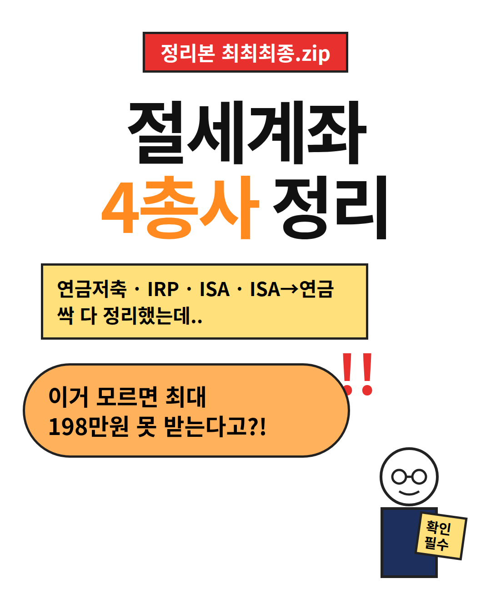
p1_v11
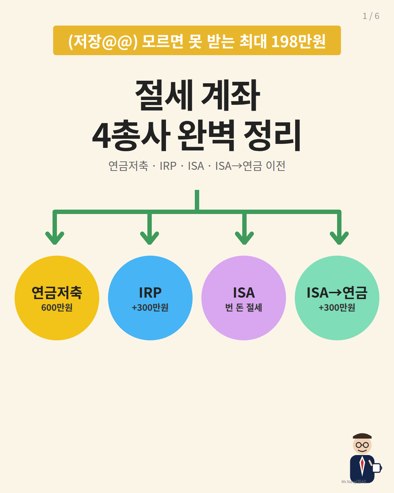
p1
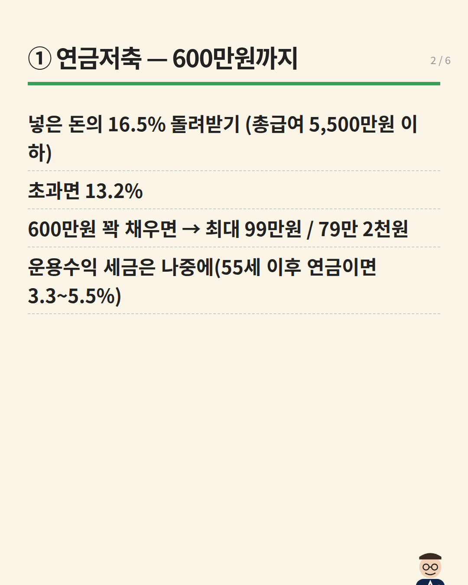
p2
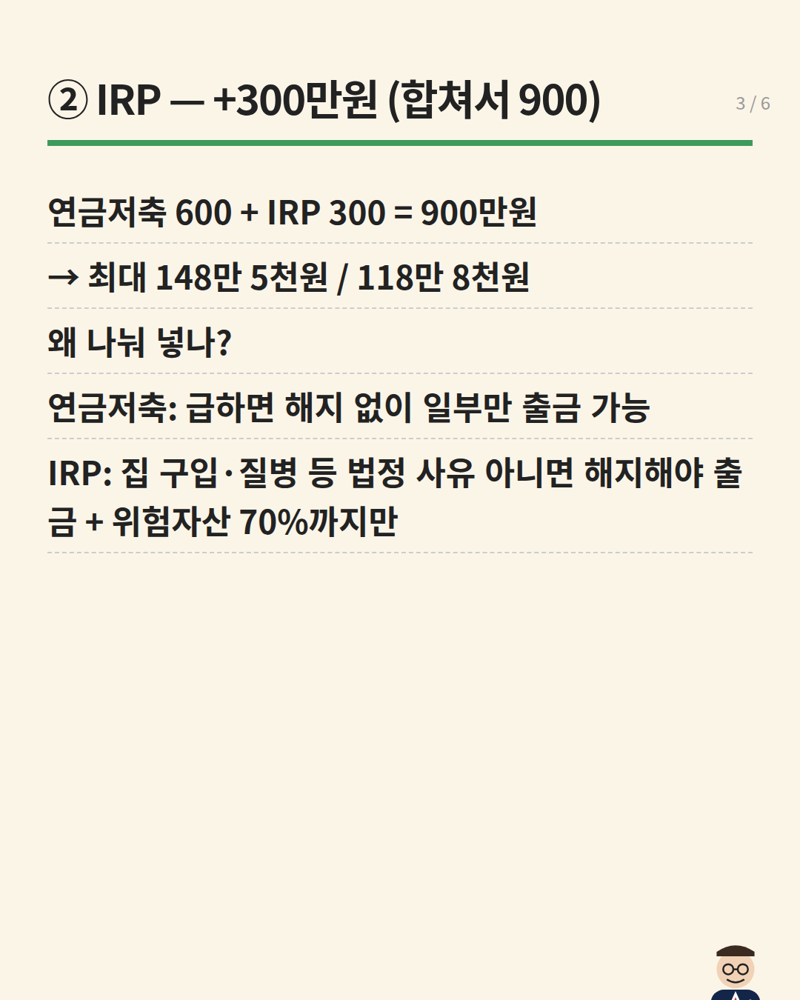
p3
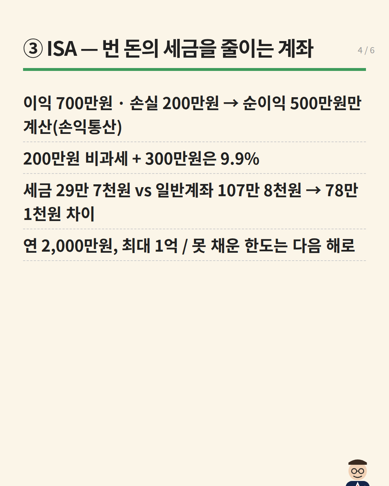
p4
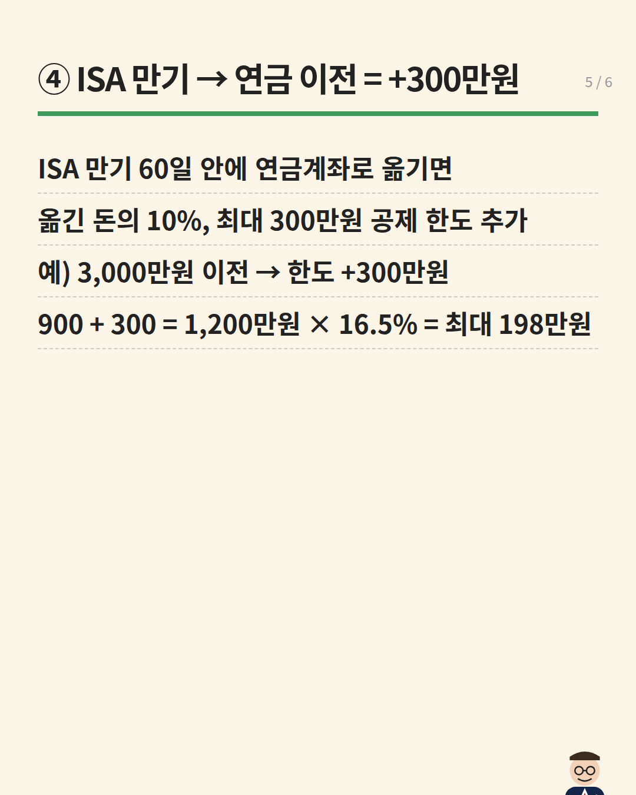
p5
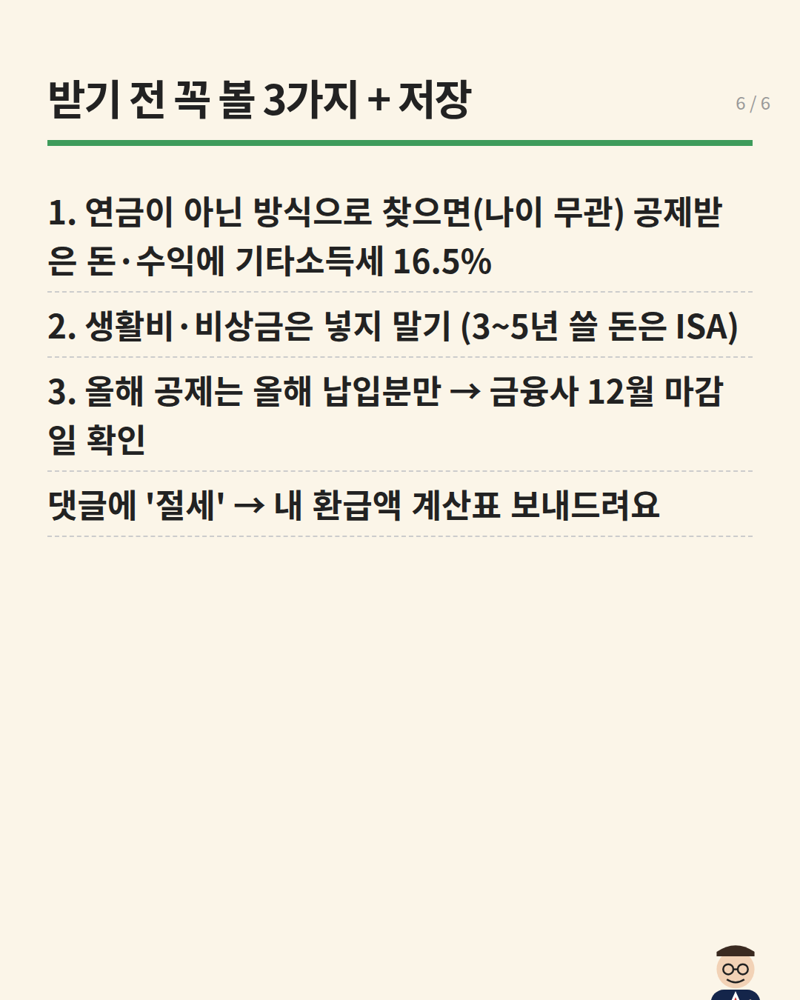
p6
표지 문구 조합 근거
내 문구
어디서 가져와 어떻게 바꿨나
(저장@@)
B 캡션 첫머리 '(저장@@)' 저장 유도 장치
모르면 못 받는
C '나만 빼고 다 아는 … 받아가세요' 손실회피/획득형을 돈 문구로 변형 (규칙 B3)
최대 198만원
N1: 연금저축+IRP 900만원×16.5%=148.5만원, ISA 만기자금 연금 이전 시 공제 한도 최대 300만원 추가 → 1,200만원×16.5%=198만원 (총급여 5,500만원 이하·ISA 만기 이전 조건)
절세 계좌 4총사 완벽 정리
A '절세 계좌 3총사 완벽 정리' → 4총사 (규칙 A2)
원 4개 다이어그램
A 표지의 화살표 분기 + 원 3개 → 원 4개
장별 내용 + 근거
내용
근거
① 연금저축 — 600만원까지 넣은 돈의 16.5% 돌려받기 (총급여 5,500만원 이하) 초과면 13.2% 600만원 꽉 채우면 → 최대 99만원 / 79만 2천원 운용수익 세금은 나중에(55세 이후 연금이면 3.3~5.5%)
N1 본문 수치 / B '매년 600만원씩 넣고' 문장
② IRP — +300만원 (합쳐서 900) 연금저축 600 + IRP 300 = 900만원 → 최대 148만 5천원 / 118만 8천원 왜 나눠 넣나? 연금저축: 급하면 해지 없이 일부만 출금 가능 IRP: 집 구입·질병 등 법정 사유 아니면 해지해야 출금 + 위험자산 70%까지만
N1 수치 / Y1(박곰희TV) 16:30~17:15 '연금저축은 해지하지 않고 출금 가능, IRP는 법적 사유 외엔 해지해야 출금' + 위험자산 70% 구간
③ ISA — 번 돈의 세금을 줄이는 계좌 이익 700만원 · 손실 200만원 → 순이익 500만원만 계산(손익통산) 200만원 비과세 + 300만원은 9.9% 세금 29만 7천원 vs 일반계좌 107만 8천원 → 78만 1천원 차이 연 2,000만원, 최대 1억 / 못 채운 한도는 다음 해로
N1 본문 예시 그대로 (일반형 ISA 기준, 단순 가정)
④ ISA 만기 → 연금 이전 = +300만원 ISA 만기 60일 안에 연금계좌로 옮기면 옮긴 돈의 10%, 최대 300만원 공제 한도 추가 예) 3,000만원 이전 → 한도 +300만원 900 + 300 = 1,200만원 × 16.5% = 최대 198만원
N1 본문 (만기자금 이전 추가 한도) + 계산
받기 전 꼭 볼 3가지 + 저장 1. 연금이 아닌 방식으로 찾으면(나이 무관) 공제받은 돈·수익에 기타소득세 16.5% 2. 생활비·비상금은 넣지 말기 (3~5년 쓸 돈은 ISA) 3. 올해 공제는 올해 납입분만 → 금융사 12월 마감일 확인 댓글에 '절세' → 내 환급액 계산표 보내드려요
N1 주의사항 / A 캡션 '올해 꼭 개설' / CTA = A '정리본 필요하시면 댓글' + C '받아가세요' / Y1 19:30 '55세 지나도 연금 아닌 형태로 받으면 해지'
설명글
(저장@@) 같은 월급인데 연말정산에서 100만원 넘게 차이 나는 이유, 계좌 때문이에요.
✔ 연금저축 600만원 → 최대 99만원 ✔ + IRP 300만원 (합쳐서 900) → 최대 148만 5천원 ✔ ISA: 이익과 손실을 합쳐서 세금 계산 + 200만원 비과세 ✔ ISA 만기자금을 연금으로 옮기면 공제 한도 최대 300만원 추가 → 최대 198만원
(총급여 5,500만원 이하 16.5% 기준, 초과는 13.2%)
정부가 대놓고 세금 깎아주겠다고 만든 계좌, 모르면 그냥 못 받습니다. 단, 연금이 아닌 방식으로 찾으면(나이 무관) 세금을 다시 낼 수 있어요. 노후까지 둘 돈만 넣으세요.
👉 내 연봉으로 얼마 돌려받는지 계산표 필요하면 댓글에 '절세' 남겨주세요!
설명글 부분
근거
(저장@@)
B
정부가 대놓고 세금 깎아주겠다고 만든 계좌
A 캡션 '정부가 대놓고 세금 깎아주겠다고 만든 계좌인데 안 쓸 이유없죠?' 문장 변형
수치 전부
N1
👉 댓글 CTA
A '👉 … 정리본 필요하시면 댓글 주세요'
첫 댓글 📌 198만원은 총급여 5,500만원 이하 + ISA 만기자금 연금 이전까지 했을 때 최대치예요. 올해 이미 얼마 넣으셨는지 댓글로 알려주시면 남은 한도 계산해 드릴게요.
표지만 다른 섹터 비주얼(@ram.zee 손글씨형): 흰 배경, 빨간 라벨 '정리본 최최최종.zip', 초대형 손글씨 '절세계좌 / 4총사 정리'(4총사 주황), 노란 메모 박스 '연금저축·IRP·ISA·ISA→연금 / 싹 다 정리했는데..', 주황 말풍선 '이거 모르면 최대 198만원 못 받는다고?!', 오른쪽 아래 Mr. Navy가 '확인 필수' 팻말. 2장에 원 4개 분기(같은 분야 원본 구조).
1080x1350 white background hand-drawn marker style cover: red rectangle label at top, huge hand-lettered black Korean title area with one orange keyword, a yellow sticky-note box, an orange speech bubble, and bottom-right a simple line-drawn Mr. Navy (navy suit, round glasses) holding a small sign. Same playful doodle feel as a popular Korean savings infographic, but our own character and colors. Text will be typeset.
내지 디자인 / 이전 표지 지시
A 1:1: 크림색 종이 배경, 굵은 손글씨 2줄 제목, 제목 아래 초록 화살표가 위에서 갈라져 원으로 연결. 변경점: 원 3개→4개(노랑 연금저축 / 하늘 IRP / 연보라 ISA / 민트 'ISA→연금'), 맨 위에 금색 띠로 '최대 198만원', 우하단 Mr. Navy가 돼지저금통 옆에서 컵(새끼손가락). 내지는 같은 손글씨 톤 + 큰 숫자 강조.
1080x1350 cover. Same composition as attached reference A: cream paper background, big hand-lettered Korean two-line title area at top, a green marker arrow coming down and branching into FOUR circles in a row (yellow, sky blue, lilac, mint) with label space inside each. Add a small gold ribbon area above the title for '최대 198만원'. Tiny Mr. Navy (navy suit, round glasses) at bottom-right next to a piggy bank, holding a tea cup with pinky raised. Flat marker-illustration style. Attach reference A and the character sheet.